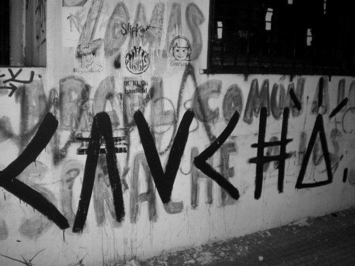

Sobre nosotros

Ladran Sancho es un proyecto multiplataforma de difusion de arte urbana. Nace como idea en 2021, en medio de la pandemia mundial por coronavirus. El aislamiento y las distancias, lejos de ensanchar las brechas humanas, despierta la creatividad de la sociedad para implementar mecanismos de entretenimiento, y entre contenido basura, y una batalla diaria con la angustia propia de la soledad, se despierta una clase de fuerza dentro de la juventud por construir algo diferente. En ese contexto reflexiono la responsabilidad civil y artistica de generar un cambio a travez del dialogo e intercambio humano, y acercar la cultura como forma de expresion a quienes tienen mucho que decir, y no son escuchados.